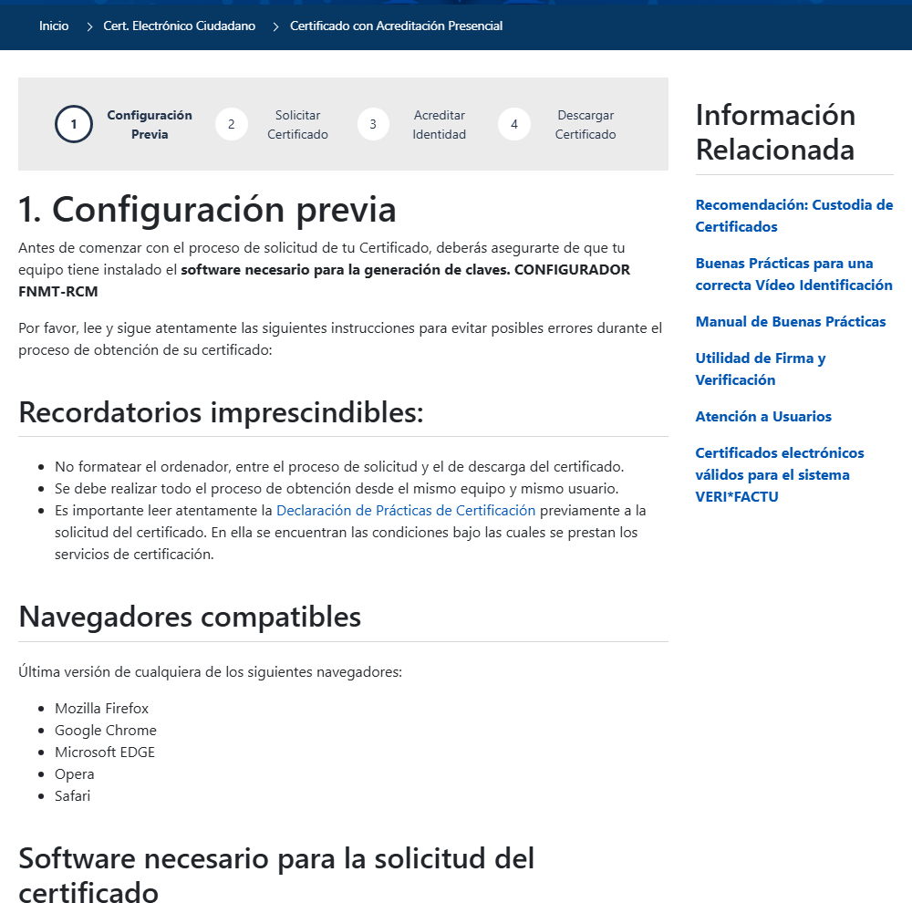
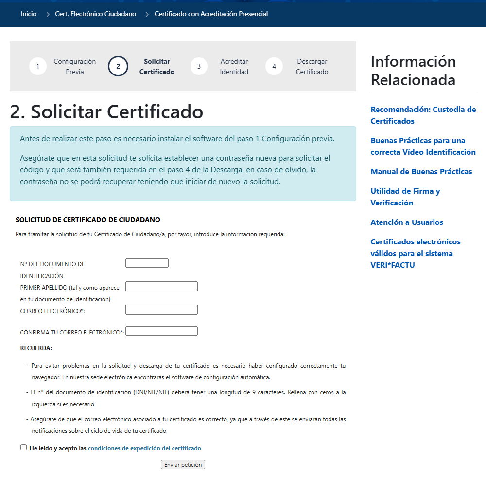

Pasos 1 y 2: configuración previa y solicitud
Verás qué hay que instalar antes de empezar y cómo es realmente el formulario de solicitud del certificado.
Pasos 1 y 2: configuración previa y solicitud
Paso 1 · Configuración previa
Antes de solicitar nada, tu equipo necesita el Configurador FNMT-RCM: un pequeño programa, gratuito, que genera el par de claves (pública y privada) en tu ordenador. Una vez instalado, no tienes que abrirlo ni hacer nada más: se pondrá en marcha automáticamente cuando el navegador lo necesite, en los pasos 2 y 4.

Paso 1, tal y como se ve hoy en la Sede Electrónica: hay que instalar el Configurador FNMT-RCM antes de solicitar nada.
Captura real de sede.fnmt.gob.es (23/09/2026). El aspecto de la web puede cambiar con el tiempo.
Paso 2 · Solicitar el certificado
Con el Configurador instalado, rellenas un formulario mucho más corto de lo que parece: tu documento de identificación (DNI, NIF o NIE, con 9 caracteres —rellena con ceros a la izquierda si hace falta—), tu primer apellido tal y como figura en el documento, y tu correo electrónico, que tendrás que escribir dos veces para confirmarlo.

El formulario real solo pide tu documento de identificación, tu primer apellido y tu correo electrónico (dos veces, para confirmarlo).
Captura real de sede.fnmt.gob.es (23/09/2026). El aspecto de la web puede cambiar con el tiempo.
Qué recibirás
Al terminar, la FNMT te envía un correo con tu Código de Solicitud (una combinación de letras y números). Lo necesitarás en el paso 3, para acreditar tu identidad, y de nuevo en el paso 4, para descargar el certificado.
- 📧 Guarda ese correo: no lo borres hasta tener el certificado instalado y con copia de seguridad.
- ✍️ Escribe tu primer apellido exactamente igual que en tu DNI/NIE (con sus tildes, si las lleva), sin erratas.
🧩 El Configurador
¿Para qué sirve el «Configurador FNMT-RCM»?
🧩 Dos códigos distintos
Al final de la solicitud, ¿qué dos elementos debes guardar con cuidado?